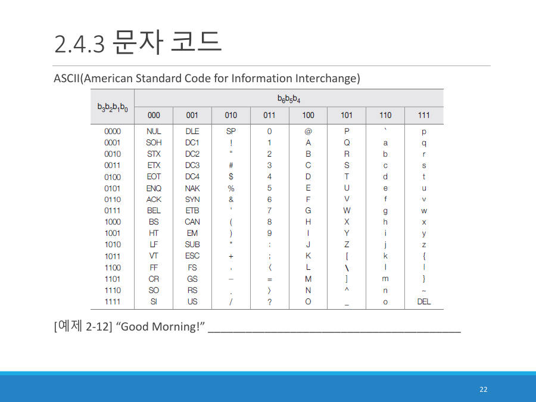

문자 코드 — ASCII ★★★
컴퓨터에는 "글자"라는 것이 없어요. 0과 1뿐이에요. 그래서 "이 글자는 이 숫자"라고 미리 약속한 표가 필요한데, 영어와 숫자, 기호에 대한 가장 유명한 약속이 ASCII(아스키, American Standard Code for Information Interchange)예요.
ASCII 표는 아래처럼 생겼고, 시험에서도 표를 보여 줘요. 표 읽는 법은 이래요.

- 가로(열)는 앞의 3비트(b6 b5 b4), 세로(행)는 뒤의 4비트(b3 b2 b1 b0)예요.
- 글자를 찾아서 열의 3비트 + 행의 4비트를 이어 붙이면 7비트 코드가 나와요.
- 메모리 한 칸은 8비트이니 맨 앞에 0을 하나 더 붙여서 1바이트로 저장해요.
대문자 R을 찾아볼게요. 표에서 R은 열 101, 행 0010에 있어요. 이어 붙이면 1010010이고 앞에 0을 붙여 01010010이에요. (10진수로는 82, 16진수로는 52예요.)
알파벳은 차례대로 숫자가 1씩 커져요. 대문자는 A = 65, 소문자는 a = 97이에요(소문자가 32 커요). 숫자 글자 0은 48이고요.
R은 A에서 17번째 뒤이니 65 + 17 = 82예요. 82를 2진수로 바꾸면 01010010으로 같은 답이에요.
| 코드 줄 | 무슨 뜻인가요 |
|---|---|
print(ord("R")) | ord는 글자의 ASCII(유니코드) 번호를 알려 줘요 |
print(format(ord("R"), "08b")) | 그 번호를 8자리 2진수(08b)로 써요 |
print(chr(82)) | chr는 번호를 글자로 되돌려요 (디코드) |
실행 결과(출력)
글자 하나가 1바이트이니 단어는 글자 수만큼 바이트를 차지해요. "Apple"은 5바이트, "Data"는 4바이트예요. 슬라이드 26쪽의 "Data"는 이렇게 메모리에 들어가요.
| 글자 | 10진수 | 8비트 |
|---|---|---|
| D | 68 | 01000100 |
| a | 97 | 01100001 |
| t | 116 | 01110100 |
| a | 97 | 01100001 |
슬라이드 22쪽의 예제 2-12 "Good Morning!"은 공백과 느낌표도 한 글자로 세서 13바이트가 돼요.
| 글자 | 16진수 | 8비트 |
|---|---|---|
| G | 47 | 01000111 |
| o | 6F | 01101111 |
| o | 6F | 01101111 |
| d | 64 | 01100100 |
| (공백) | 20 | 00100000 |
| M | 4D | 01001101 |
| o | 6F | 01101111 |
| r | 72 | 01110010 |
| n | 6E | 01101110 |
| i | 69 | 01101001 |
| n | 6E | 01101110 |
| g | 67 | 01100111 |
| ! | 21 | 00100001 |
모스 부호는 글자마다 점과 선의 조합을 정해 놓은 약속이에요. ASCII는 글자마다 8비트 조합을 정해 놓은 약속이고, 같은 표를 쓰는 사람끼리만 서로 읽을 수 있어요.
문자는 ASCII 코드표에서 해당 글자의 코드를 찾아 1바이트(8비트) 이진수로 바꾸어 메모리에 저장한다. 예를 들어 R은 열 101, 행 0010이므로 01010010이다.
잠깐 확인 — "Hello"는 메모리에서 몇 바이트를 차지하나요?
5바이트예요. 글자 하나가 1바이트이고 글자가 5개이기 때문이에요.
화면을 가리고 "문자 코드 — ASCII ★★★"을(를) 친구에게 설명하듯 한 문장으로 말해 보세요. 막히면 위의 빨간 칸만 다시 보고 넘어가요.